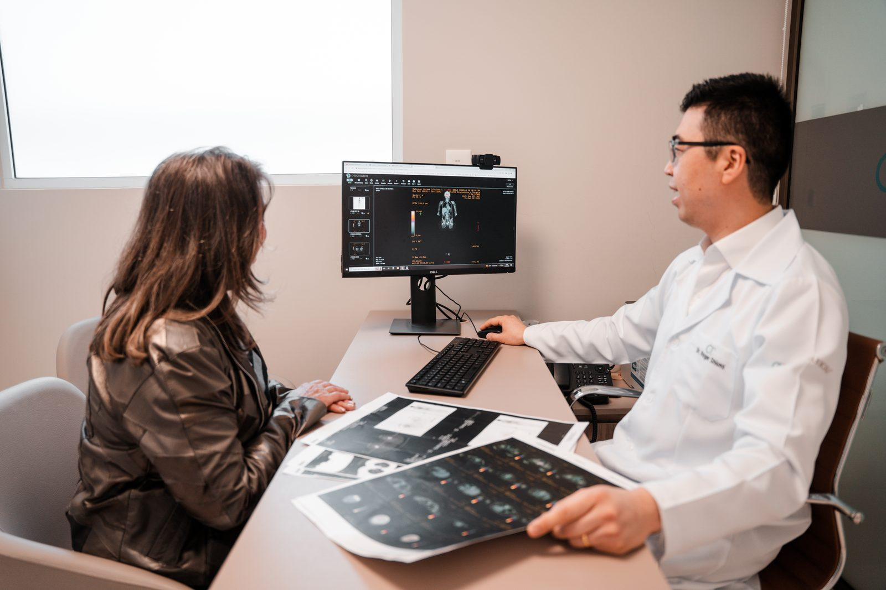

Segunda Opinião Médica
Se você já tem uma conduta oncológica proposta, mas busca a segurança e a tranquilidade de avaliar alternativas modernas, revisar o protocolo ou confirmar o caminho escolhido antes de iniciar.

Oncologia Clínica e Tratamento do Câncer em Curitiba
Planejamento terapêutico individualizado para o tratamento do câncer, focado em eficácia e na sua qualidade de vida. Um acompanhamento presente, conduzido com respeito, tempo e a dedicação que você e sua família precisam agora.
O tempo e a atenção que o diagnóstico de câncer exige
Qual o caminho mais seguro? O que esperar do tratamento? Como organizar a rotina a partir de agora?
No meu consultório, o tempo corre de um jeito diferente. Minha preocupação não é preencher uma planilha ou liberar a sala rapidamente. Meu foco é ouvir você, entender suas expectativas e desenhar um plano terapêutico que faça sentido para o seu organismo e para a sua rotina.
A medicina baseada em evidências científicas só alcança o seu melhor resultado quando é aplicada com empatia, ouvindo quem está do outro lado da mesa.
Quero conversar sobre o meu casoComo posso te ajudar
Como oncologista clínico, meu compromisso é com a pessoa que enfrenta o câncer — não apenas com a doença.
Se você já tem uma conduta oncológica proposta, mas busca a segurança e a tranquilidade de avaliar alternativas modernas, revisar o protocolo ou confirmar o caminho escolhido antes de iniciar.
Ao seu lado em cada ciclo — na indicação, no planejamento e na condução cuidadosa da Quimioterapia, Imunoterapia, Hormonioterapia e Terapias-alvo.
Acompanho de perto cada etapa do seu cuidado, mantendo comunicação direta com cirurgiões e radioterapeutas para que todo o suporte funcione em harmonia ao seu redor.
Áreas de atuação e cuidado
Como oncologista clínico, dedico-me a cuidar de cada pessoa com câncer, com tratamentos sistêmicos para:
O ecossistema de atendimento
O cuidado começa antes mesmo de nos conhecermos pessoalmente. Ao confirmar sua consulta, minha equipe solicita seus laudos e imagens para que eu estude seu histórico detalhadamente com antecedência. O momento da consulta é otimizado para conversarmos sobre soluções e acolher suas dúvidas.
Dúvidas sobre o tratamento e efeitos colaterais não têm hora para surgir. As pessoas em tratamento oncológico ativo contam com um canal direto via WhatsApp com a nossa equipe para suporte ágil e acolhedor sempre que necessário.
Sem termos médicos incompreensíveis. Você e sua família recebem um plano de cuidados desenhado de forma simples, com datas e ciclos bem explicados, permitindo que todos organizem a rotina com segurança e previsibilidade.
A consulta de avaliação é o primeiro passo para entender o caminho certo para você.
Quero agendar minha consultaQuem é o Dr. Roger Shiomi
Sou o Dr. Roger Shiomi. Minha trajetória foi construída nos principais centros de referência oncológica do Paraná, unindo o rigor da ciência ao compromisso de oferecer um atendimento humano, atento e focado no bem-estar integral de cada pessoa com câncer que atendo.
Histórico de dedicação
Graduação em Medicina pela Universidade Federal do Paraná (UFPR).
Residência Médica em Oncologia Clínica pelo Hospital Erasto Gaertner.
Mestre em Ciências da Saúde pela PUCPR.
Locais de atendimento
O acompanhamento e as aplicações dos tratamentos são realizados em centros médicos altamente preparados:
OncoYart
R. XV de Novembro, 1735 – sobrelojaUnidade Oncoville
Marginal Rodovia BR-277, 1437Hospital São Marcelino Champagnat
Av. Presidente Affonso Camargo, 1399Perguntas frequentes
Logo após o agendamento, nossa equipe entrará em contato para orientar o envio digital dos seus laudos e exames de imagem recentes. Eu analiso todo o material antes do nosso encontro para garantir uma consulta mais próxima, humana e direcionada a você.
A segunda opinião traz segurança para você e sua família. Eu reviso o diagnóstico e a conduta proposta anteriormente com base nos estudos científicos mais recentes, confirmando o caminho ou apresentando alternativas que ofereçam mais eficácia e melhor qualidade de vida durante o processo.
Para garantir um atendimento sem pressa, com escuta ativa e dedicação exclusiva a cada pessoa, as consultas são feitas apenas na modalidade particular. Contudo, as etapas de aplicação de medicamentos e exames nas instituições parceiras (como Oncologia C&A e IOP) costumam aceitar diversos planos de saúde. Nossa equipe dará todo o suporte para entender o fluxo da sua estrutura de saúde.
Agende sua consulta